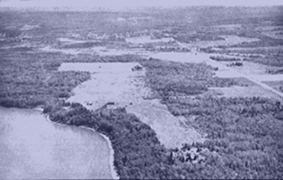
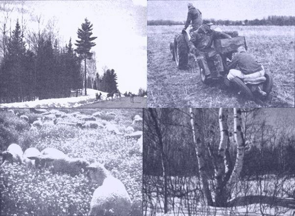

"Low-cost land"is a relative term these days. All too of ten-in the mouth of a real estate dealer anyhow-it means something like "under $1,000 an acre". Exceptions do still exist, though, and Jim Allen has some good news to share about his own neck of the Wisconsin woods.
High real estate prices are one of the biggest deterrents to people who would like to go back to the land. Acreage is already expensive in any established farming or ranching area...and expanding urbanization, vacation developments and outright speculation are raising prices to astronomical levels in many regions.
There is, however, one part of the country that hasn't yet been ruined by speculators: a place where there's so little demand for farms that thousands of acres are continually going back to the county for unpaid taxes...and where productive homestead sites can be bought for $20.00 an acre in 40-acre tracts.
Northern Wisconsin is probably the best example in the entire Midwest of a so-called depressed area. In about 100 years it's gone from wilderness to major lumber-producing region to farm country and is now-except for the localities affected by the vacation industry-fast returning to a primitive state.
The pattern was set at the turn of the century when the lumber barons stripped the area of its virgin timber. The logged-off land was then sold as 40-acre farms, mainly to immigrants from Scandinavia.
The Finlanders and Swedes worked miracles with the stubborn red clay and built cozy homes, old-world dairy barns and sauna baths. They got plenty to eat from their land and it suited them fine. Many a 40-acre patch of Wisconsin soil fed and clothed a growing family.
As the 20th century wore on, however, it wasn't enough to be well fed and physically comfortable. The new generation coveted the great possessions of their city friends. The 40-hour week, the automobile and the television set-not to mention labor-saving appliances-all had their attractions.
Unfortunately, that old patch of red clay couldn't produce enough cash money for all those innovations. So the young folks went to town to work in factories, mills and offices...or to the mining locations to labor in the giant pits and taconite plants. When the old people passed on, nobody cared enough about the home farm to pay the taxes on it...and the land went back to the county.
True, some of those tracts should never have been farms in the first place. Many were abandoned by their original settlers and are now parts of national, state and county forests. Others of the old places, however, have good soil. Red clay grows excellent hay and small grain...also turnips and other vegetables which can stand cold conditions. Some of the finest apple orchards in the nation thrive in northern Wisconsin.
No matter what the land is like, though, to make a 20th-century living-complete with flashy automobiles, shiny new appliances, color TV sets and snowmobiles-you need a lot more than a quarter section. The farmers who are making it big these days have hundreds of acres, some close to a thousand. The isolated 40's are growing up in trees and brush and the taxes on such property are often unpaid.
When land goes tax delinquent in northern Wisconsin, it passes through a mockery of a sheriff's sale in which only the county is allowed to bid on (and inevitably ends up with) the tax deed. If the owners of the tract don't pay the taxes and penalties within a certain time, the local government assumes title to the place.
Most counties in these parts are land-poor. They own vast reaches of forest which bring them 50 cents an acre a year from the state, in return for half the stumpage (standing tree) value
when timber or pulpwood is sold. Modern forestry, like modern farming, is feasible only on a grand scale. Therefore, if the county takes over a 40 or 80 that's nowhere near the rest of its wooded holdings, it tries to sell that plot to a person who will pay the taxes.
When the county decides to offer land for sale, it puts a minimum appraised value on each parcel. Then it advertises the property in the official county newspaper (or sometimes in every paper within its jurisdiction).
Each county has its own conditions for sale. The only uniformity is that every sealed bid must be accompanied by 10% of the offer in cash,money order or bank check. If the rest of the purchase price isn't paid by the successful bidder, the 10% is forfeited.
Beyond this point, any resemblance to consistency is purely coincidental. Douglas County, for example, requires that bids be made on standard forms available from the county clerk. The intended use of the land must be stated on the bid sheet, and if the acreage isn't put to that purpose within a certain time, the locality takes it back under a reversion clause in the deed. Though the time limit for utilizing the tract is usually one year, there can be some flexibility. In neighboring Bayfield County, on the other hand, no bid form is specified, no questions are asked about the bidder's intentions and there is no reversion clause.
The prospective buyer should be warned that the highest bidder isn't always successful. On any tract the county offers there may be unstated conditions known only to insiders. Frequently the land is put up for sale so one individual, and that one only, may purchase it...but this fact is never stated in the advertisement, so persons not privy to the local government's secrets have no way of knowing the truth. Suffice it to say that the county board of supervisors is permitted to accept whichever bid is in the best interests of the area.
There are reasons for most of the shenanigans involving transactions in county land. One is the tax revenue the local government expects from the favored bidder. For example, one recent sale of property attracted two competitors. The person who made the higher offer intended to plant trees on the site...the other proposed to build a retirement home. So which will yield more taxes, 40 acres of woods or 40 acres with a new house on it? Many times, too, the lower bidder is favored because he already owns adjacent property. The farmer who wants more land, or the homeowner who wants the vacant lot next door, is likely to get his wish no matter how high the other offers go. Usually in cases like this the parcel is advertised for sale at the request of the prospective purchaser.
As if the situation weren't already confusing enough, the county board sometimes changes its mind about selling a particular chunk of land and decides to keep it after a number of people have bid on it.
In spite of all the exceptions and political favoritism involved in such sales, though, the highest bidder does often get the land he wants with no sweat. The main thing to remember is not to set your heart on a specific tract until the deed is signed, sealed and delivered. The bargains are there, and a little patience can make you the owner of a beautiful homestead.
One more point to keep in mind about buying land from the county is that the deal can be tricky when water frontage is involved. When a shoreline has recreational value, the local authorities may hold back a strip along the lake or river for public access. If the acreage is in a harbor area, some or most of it may be under water. Such property is generally measured to the dock line, which is some distance from the beach. This is the limit to which a landowner can fill in the harbor (after obtaining the proper permit, of course).
You should also be aware that tax-forfeit land isn't always the only type a local government has for sale. Occasionally, for instance, real estate is sold by a county welfare department which has taken a lien on the home of a person getting old-age assistance. When the recipient dies, the heirs may inherit the acreage only if they pay back the relief the county gave their parents. In case they fail to do so, the welfare department takes over and sells the property. This is often a very economical way to buy a plot with a modest but livable home on it. If you're setting out-armed with this information-to look for northern Wisconsin land, the first thing to do is visit the county or counties where you think you might like to locate. Look at the countryside, the lakes, streams and rivers, the hills and trees...and try to make your inspection in the winter as well as in the summer.
Stop in at the courthouse of the locality's principal town and talk to the county clerk about how his jurisdiction handles land sales. Buy a plat book from him...it'll cost $5.00 to $10.00, but you'll refer to it constantly. Find out in which paper the county advertises its offers of property, and order a year's subscription.
While you're gathering information, get a copy of the county zoning ordinance and the map that goes with it. Rural zoning-the rule in Wisconsin-started because people moved out in the boondocks, demanded roads and school buses and then either pulled out or went on welfare. Today the regulations are aimed more at protecting lakeshores and preventing city lot developments in country areas. They do contain, however, such loopholes as provisions for hunting and trapping cabins and residences for caretakers in forestry and recreation zones.
Talk to the county agricultural agent, whose business is passing technical information on to farmers. If he's not located in the courthouse the crew there will know where to find him. Some areas also have specialized forestry, horticulture or dairy advisers.
Nor should you miss a discussion with the local Soil Conservation Service man. Find out from him what kinds of earth every section of the county has and what you can expect each type to produce. Ask if a soil survey of the region is available... if so, it's free for the taking.
Courthouse workers are snoopy and gossipy, by the way, and word will go out fast if a bunch of freaks come in to investigate county land. Needless to say, it might be a long time before a recognized longhair became a successful bidder on a piece of property so, if you're a little far out, some common sense is needed in these inquiries. When you approach the people at the courthouse, be as straight as possible. Pretend you're a teacher or skilled worker looking for a summer cottage site where you can have a little garden, or tell them you want a place to build a hunting or fishing cabin.
If you can't put on a straight act, don't give the officials your right name and address when you talk to them (they'll want to write that information down when you buy a plat book). Or let one person do the talking and leave the bidding to another with a different address.
After your trip, when you get time, study the plat book you bought. Each page is a map covering a piece of land measuring six miles in each direction and called a township. Within that area each square mile is called a section and is assigned a number from 1 to 36. The numbering starts in the northeast corner, proceeds across the northern edge of the township from east to west, drops down a mile and returns from west to east, and so on. This system is uniform throughout most of the United States, in the area covered by the rectangular government survey called the General Land Office Grid.
The townships have their own system of identification: They're numbered north from specific base lines and east and west from principal meridians. The north-south series are known as "ranges". Thus a township might be described as Town 50 North, Range 5, West...and a section in that town as Section 25, Town 50 North, Range 5 West. Abbreviations for this description might be written as Sec. 25, T5ON, R5W, or just as 25-50-5.
The system provides a further breakdown within each section, based on quarters and halves. Thus "the southeast quarter of the southeast quarter" would describe a 40-acre tract
within a 640-acre section. In the abbreviated form used in advertising land for sale the entire description might be written as "se-se-25-50-5". [ For further discussion of the federal survey, with illustrations, see LIFESTYLE!NO. 5, "Understanding Topographic Maps".-MOTHER. ]
When there's a lake bordering a piece of land, the water doesn't go with the property and that parcel is not described in terms of a fraction of a square mile. Instead it's called a "government lot", and all such plots are numbered within a section. The plat book will give the number of the lot and its acreage. (The same useful manual also shows all roads and streams, and the name of the owner of record of each tract of land at the time the book was made up.)
Next compare the plat book with the maps in the soil survey publication. The latter charts are also based on townships and sections, so it's easy to use the two together.
Incidentally, when land is put up for sale in a platted subdivision-an area that's been divided into building lots-the boundaries won't be shown in a plat book. This means a trip to the courthouse to look at and maybe to copy the recorded location.
You should be warned that lots in such developments are frequently too small to build on. In the city of Superior, parcels only 25 feet wide were laid out originally...but the local zoning law now requires a 50-foot width for building, so at least two lots are necessary.
Once you're squared away with your reference works, sit back and watch for the land sale advertisements. Check each tract in the plat book and on the soil map and, if at all possible, drive out to see it. Northern Wisconsin is only a day's trip from Chicago and many other Midwestern cities, so the inspection can be made on a weekend.
The best rule in buying land is never to do so without seeing it first. If you can't afford to go and look at the place, you can't afford to buy it.
Countless suckers are being ripped off by shady promoters who advertise homesites in vacation or retirement areas. Property which cost the con men only a few dollars is going for thousands an acre, with a small amount down and extended monthly payments. When the victim finally goes to look at his building lot, he finds it out in the middle of nowhere with no roads, no utilities and no water within drilling distance.
When inspecting real estate for possible purchase, look to see if the boundaries are marked. Rotted posts and rusty wire are enough to establish the property lines, even if they've fallen down and are covered by dead grass. But if there's no way to find the borders, it may cost more to survey the place than to buy it. Will you want electric service on your homestead? Then look to see how close the powerline comes to the site. If it's nowhere near, it might take a lot of time and money to get the current put in. How about roads? Will they turn into mudholes when the snow melts in the spring? How far away are the schools? What's the distance to the nearest town? What suits one buyer may not suit another...but, if you like what you see, put in a bid.
When you finally have title to your homestead in your hands and have recorded it with the Register of Deeds, what have you got for your $20.00 or so an acre? Well, to begin with, the land will most likely need some clearing. At worst, it may be covered with alder brush. The only consolation is that alders are supposed to be good for smoking meat and fish, will make fine beanpoles and can be used for temporary lean-tos and other shelters.
At best, the place will have some aspen, birch, balsam fir and spruce cover and-perhaps-some small maples which will yield firewood and logs for a small cabin. Usually, wooded land is stripped of its merchantable timber before it's abandoned.
The soil, if it's red clay, will produce good crops with a little work but it won't grow corn. Sandy earth will produce corn but is less fertile than the heavier land. Whatever the soil type may be, learn to work with, and not against, it. Try every crop at least once. If a grain or vegetable does well, keep on with it. If it fails, try something else next year. A little trial and error will result in a bumper harvest most seasons.
Once on the homestead, try to avoid hassles with the law and with local welfare departments. Self-supporting persons who stay out of trouble are more than welcome in northern Wisconsin, regardless of their incomes or ideas. But if people who buy county land start signing up for relief or food stamps, the welcome mat will be rolled up and the next fellow who comes along will face innumerable obstacles. This neck of the woods offers great opportunities for the back-to-the-land movement...let's not spoil that chance for our sisters and brothers
|
 |
 |
|